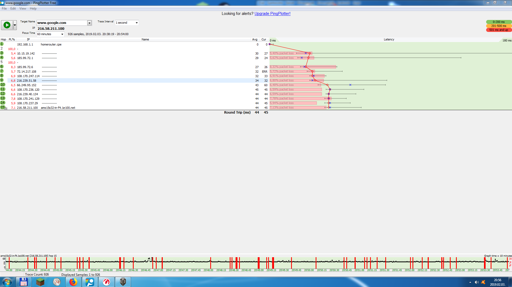
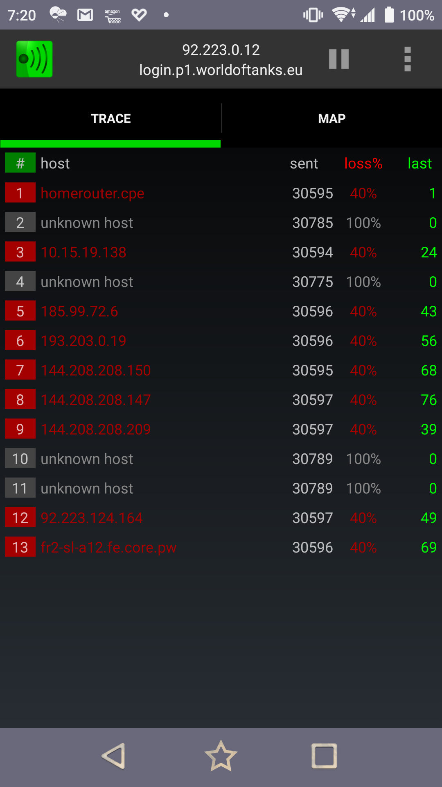
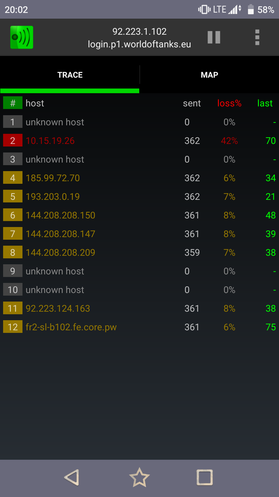
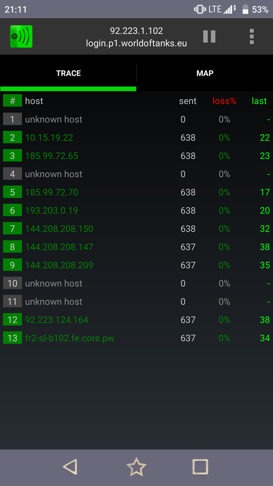
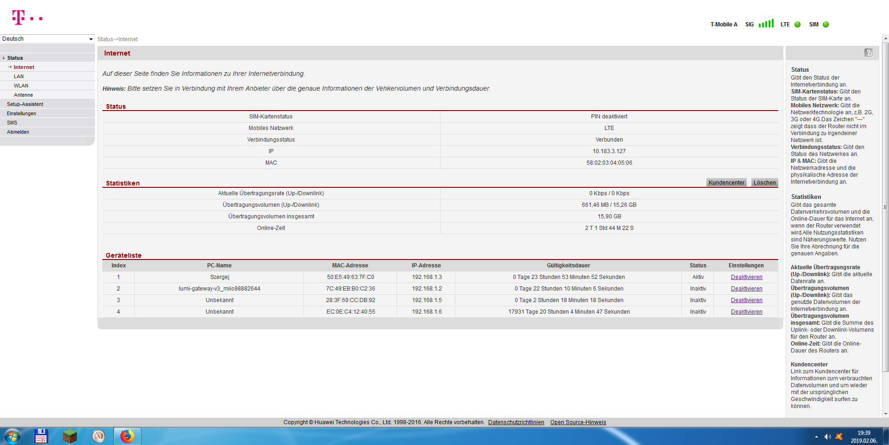
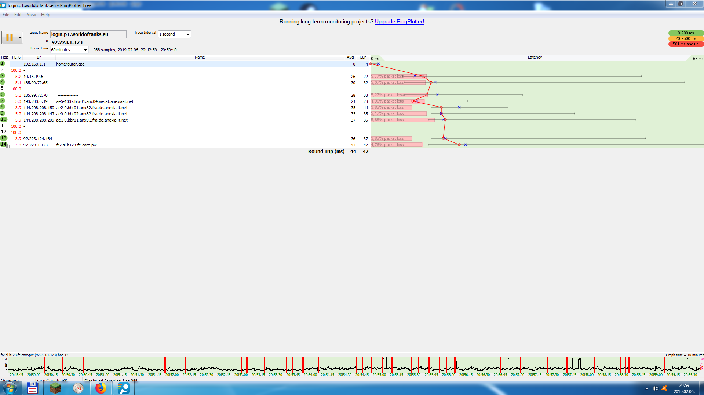
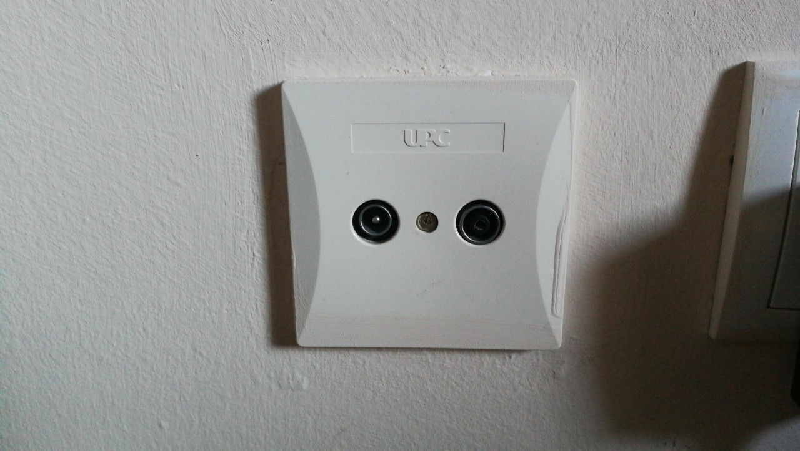
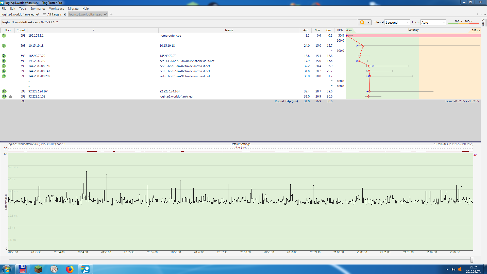
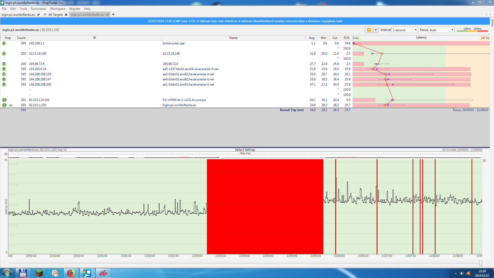
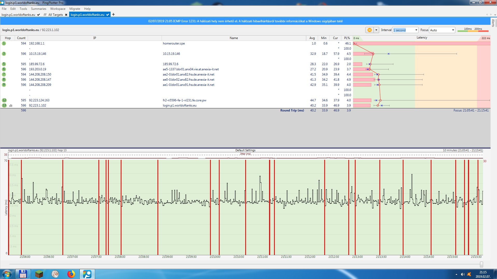

{kind=link}
{kind=link}
{kind=link}
{kind=link}
{kind=link}
{kind=link}
{kind=link}
{kind=link}
{kind=link}
{kind=link}
{kind=link}
Gerne.
Dafür sind wir ja da.

LG
Christian
Hallo,
ich hätte das folgene Problem:
Wir haben zu Hause ein Huawei b593 router, und My HOMENet Light. Ich spiele schon lange World of Tanks, und ich erfahre schreckliche Packet loss in der letzten Zeit, und es tut das Spiel ungenießbar und unmöglich.
Das Problem erscheint bei Kabel und bei WiFi. Ich habe alle Geräte von dem Netz getrennt, Neustart gemacht(von der Steckdose stundenlang ausgezogen), alle Drivers sind up-to-date.
Das Problem ist zu dem T-Mobile verbundet, genauer sagen, zu dem Server wozu mein Router Verbindung hat. Ich habe google.com mit Pingplotter "gepingt", und ich habe das gleice Ergebnis bekommen.

In Online Gaming, ich sende und bekomme hundertmal mehr Pakete pro Sekunde, und deswegen erfehre ich schrekliche Qualität.
Ich habe T-Mobile Extreme Tarif auf meinem Handy, und ich habe Traceping auf das Handy installiert, und ich habe durch seines Netz super Qualität erfahren, aber durch dem WiFi es ist Nonsens.
Es ist sichtbar, das die Route ist nur bei der ersten 3 Hops ander, ab dem IP 193.203.0.19, die sind gleich. Vor dem sind nur Lokale und T-Mobile Servers(185.99.72.70; 185.99.72.65; 10.15.19.22; 185.99.72.6; 10.15.19.138)
Es ist nicht annehmbar, wann wollen Sie es fixieren?
Alles klar:
Was hast du im Schnitt für Ping Zeiten?
Es handelt sich dabei um einen reinen LTE Zugang?
LG
Christian
Hallo,
danke für die schnelle Antwort!
Das Ping im Spiel ist ungefähr 50-70.
Die Signalstarke in dem Router ist maximal(4 Streifen ich glaube). Es steht 60 cm von dem Fenster, und es ist in der letzten 2 Jahren dort gestanden.
Die zwei Handybildern wurden in der Innenwohnung gemacht(~ 2 Wände von dem Router), und die LTE Verbindung , mit zwei von vier Streifen ist besser gewesen, als das Wifi.
Ich habe noch dieses Bild:

Traceping ist durch dem Nacht gelaufen, aber dann mit reine Zugang zu dem Router.
MfG,
Gabor Horvath
Der Ping Wert ist aber sehr hoch - im Normalbereich sollte der Ping bei der LTE Verbindung irgendwo zwischen 20 und 30ms liegen.
Ob in deinem Fall nicht eine Hybrid Verbindung besser wäre, denn durch die zusätzliche Leitung ist der Ping nocheinmal deutlich besser - außer man benötigt richtig viel Bandbreite.
Aber ich glaub das ist bei dir nicht so das Thema.
Mach doch bitte mal einen SpeedTest.
Danke und LG
Christian
Danke!
Ich habe auf Hybrid Verbindung auch gedacht, weil ich mit Optical Verbindung(ist es schon Lictwellenleiter, oder?) noch in Ungarn gute Erfahrung gehabt. Gleichzeitig, ich weiß, das LTE-Netz sollte mir reichen.
Am Nachmittag/Abend melde ich mich wieder, als ich schon speedtest.net besucht habe.
MfG,
Gabor Horvath
Wenn bei dir Lichtwelle liegt, dann wäre Hybrid perfekt!
Aber alles der Reihe nach.
Mach mal einen Speedtest und dann wissen wir auch, wie deine Verbindung ist.
Auch eine Positionsänderung des Modems kann helfen. Oder einfach mal das Fenster aufmachen und den Router raus auf die fensterbank - nur dass wir mal ein paar Rückmeldungen haben.
Danke und LG
Christian
Ich habe geprüft, das UPC hat bei uns die Glasfedertechnolie benutzen(Ich schließe auf "Unlimitiertes Datenvolumen mit bis zu 300 Mbit/s" bei Verfügbarkeit-Check darauf).
Ich werde das Router gerade neben den Fenster stellen, und ich werde versuchen.
Worauf ich noch gedacht habe, die Karte von dem Router in das Handy einstecken (wenn ich es ins NanoSIM-Größe ausbrechen kann), und mit Traceping wieder versuchen. Die Route würde wahrscheinlich selber bleiben, und wenn es noch immer schlecht wäre, könnten wir das router ausschließen.
Ich kann es für dich am Nachmittag erledigen.
MfG
Gabor Horvath
Alles klar. Klingt gut.
Sollte es Probleme mit dem Router sein, dann würde ich auch daran denken, den Router auf Werkseinstellungen zurück setzen.
Dann wissen wir schnell, ob es ein "falsches" Setting oder ein anderes Problem war.
Danke und LG
Christian
Hallo, morgen!
So, ich habe getan, aber ohne Erfolg.
Ich konnte dei Karte ins NanoSIM-Format ausbrechen, aber es hat so funktioniert:(nebenan, nach rechts das Handy mit original Karte):


Ich habe den Router zurückgesetzt(durch Reset Taster und durch 192.168.1.1), aber das Problem ist geblieben. Router Signastärke: 
WoT Server Ping mit Pingplotter und Speedtest vor dem Zurücksetzen: 
WoT Server Ping mit Pingplotter, und Speedtest,nach dem Zurücksetzen:
Es schaut so aus, das der Router in Ordnung ist, das Problem ist zu der Karte und zu ihrem Pfad verknüpft. Ich kann leider nicht mehr tun.
MfG
Gabor
Oh, und der Router ist schon auf der Fensterbank gestanden.
Alles klar Danke!
Der Speedtest zeigt zwar einen Ping der so mal OK ist aber der DL ist bescheiden.
Sieht nach einem Auslastungsthema aus.
Pegel ist sehr gut.
Da bringt wohl auch ein Umstellen des Routers wenig, wobei testen würde ich das trotzdem noch.
So wie deine Anforderungen sind, ist LTE nicht die beste Wahl.
Da würde ich eine Hybridlösung zumindest mal testen und dann entscheiden, ob das nicht die bessere Lösung wäre.
Sorry, mehr kann ich an dieser Stelle leider nicht machen, bzw. helfen.
LG
Christian
Danke für deine Antwort.
Ich werde bei T-Mobile anfragen, wie es mit umstellung auf Hybrid geht.
Danke für deine Hilfe,
MfG,
Gabor Horvath
Gerne.
Dafür sind wir ja da.

LG
Christian
Ich hätte noch zwei Fragen und es ist zu diesem Thema verbunden:
Bei Hybrid, wir werden wahrscheinlich einen neune Router bekommen.
1.: Kann ich es später ohne Kabelverbindung benutzen? Zum Beispiel, wenn wir umziehen, oder wenn wir es für kurze Zeit nicht zu Hause benuzten würden?
Wir hätten die folgende Steckdosen:

2.: Sind sie schon bereit für Hybrid technologie, oder brauchen sie etwas umbau? (Wir benutzen keine, wir haben keine Erfahrung mit dem).
3.: Geht die Akitivierung automatisch, durch Computer, oder, muss T-Mobile jemanden zu uns schicken?
Danke im Voraus!
MfG
Gabor Horvath
Ich würde dich bitten, für diese Themen die Hotline zu kontaktieren.
Die Kolleginnen und Kollegen sind dafür die Spezialisten.
Alles weitere, gerne wieder hier.

LG
Christian
wie weit ist denn die fusion t-mobile und upc?
wenn schon eine steckdose da ist!?!
Nein, es ist schon da gewesen(BJ 2010, wir sind die zweite Mieter, seit 2016).
Es ist unabhängig von dem Fusion.
Die Frage war eher, kann Tmobile da eine Hybrind Lösung überhaupt anbieten - wegen UPC?
Das kann am besten wohl die Hotline beantworten...
Bitte dort anrufen aber halt uns hier am Laufenden. Dankeschön

Warum nicht gleich zum UPC Paket wechseln?
Da sollte der Ping besser sein und das Internet unter Umständen sogar schneller.
Ich bin bis jetzt mit T-Mobile zufrieden gewesen.
Und Ihre Packet für 24,9 bietet nur 3Mb/s upload. Und T-Mobile is mobil, ich stelle es, wohin ich will.
Ihre Techniker wird sich bei mir melden, bis Montag. Wenn ich bis Montag spielen will, icg tausche die Karte zwischen dem Router und Handy...
Ich habe es gestern gemacht, erstes Bild: HandySIM im Router, 0 PL

Zweites Bild: Karte wurde ausgetauscht(breite rote Zone) 
Drittes Bild:RouterSIM ist wieder inm Router... 
Es war am vorgestern eines großes Update bei WoT, und ich habe es im Spitzzeit getestet.
Das ist die Unterschied.
Ja wenn Mobilität das Thema ist, dann bitte nicht die Hybrid Lösung verwenden, denn diese Lösung bedingt immer das Kabel in Kombination mit LTE.
LG
Christian
Ja, es ist klar.
Sonst ich habe nachgesehen, und es steht in dem FAQ, und praktisch überall: Bei Glasfesern es ist unmöglich, Hybrid HomeNet zu benutzen.
Wie ich gesehen habe(durch Adressscheck bei UPC), ich hätte Glassfäsern, weil UPC bei mir 300 Mb/s bieten können, und -laut Ihren Homepage- es ist nur mit Glass möglich.
Eigentlich sehr gut!
Wenn die Mobilität nicht unbedingt sein muss, dann würde ich da nicht nachdenken.
Dann ist Glasfaser sicher die perfekte Lösung mit traumhaften Ping Zeiten.

'
LG
Christian
Christian,
Das Ping ist in Ordnung(20-50, mir reicht), PL ist das Problem. Und es ist sichtbar, dass LTE (auf Handy) ist in Ordnung.
Und ich weiß, dass wir nicht hier bleiben...
Ah OK...
Ja dann gibts eh nur LTE.
Aber dann weiß ich auch nicht mehr weiter, denn selbst eine externe Antenne wird uns wohl nichts bringen.
Sorry...
Ich bin 100% sicher, dass diese Stürung ist von T-Mobile kommt, und unabhänging von dem Router, und von seiner Position. Ich weiß , dass verschiedene Klassen sind(ich weiß es nicht was für Klasse meine RouterSIM hat), und der Algorithmus verteilt die Bandbreite zwischen der Kunden ja nach Klasse, aber es sollte sich nur im Bandbreite spiegeln, nicht in PL.
Hallo,
ich hätte das folgene Problem:
Wir haben zu Hause ein Huawei b593 router, und My HOMENet Light. Ich spiele schon lange World of Tanks, und ich erfahre schreckliche Packet loss in der letzten Zeit, und es tut das Spiel ungenießbar und unmöglich.
Das Problem erscheint bei Kabel und bei WiFi. Ich habe alle Geräte von dem Netz getrennt, Neustart gemacht(von der Steckdose stundenlang ausgezogen), alle Drivers sind up-to-date.
Das Problem ist zu dem T-Mobile verbundet, genauer sagen, zu dem Server wozu mein Router Verbindung hat. Ich habe google.com mit Pingplotter "gepingt", und ich habe das gleice Ergebnis bekommen.
In Online Gaming, ich sende und bekomme hundertmal mehr Pakete pro Sekunde, und deswegen erfehre ich schrekliche Qualität.
Ich habe T-Mobile Extreme Tarif auf meinem Handy, und ich habe Traceping auf das Handy installiert, und ich habe durch seines Netz super Qualität erfahren, aber durch dem WiFi es ist Nonsens.
Es ist sichtbar, das die Route ist nur bei der ersten 3 Hops ander, ab dem IP 193.203.0.19, die sind gleich. Vor dem sind nur Lokale und T-Mobile Servers(185.99.72.70; 185.99.72.65; 10.15.19.22; 185.99.72.6; 10.15.19.138)
Es ist nicht annehmbar, wann wollen Sie es fixieren?
----
Bearbeitet von SztyepadzsoWenn UPC über die TV Dose 300 MBit schafft, macht das bei Hybrid keinen unterschied, da bei Hybrid die A1 Telefonleitungen verwendet werden und nicht das HFC UPC Netz.
Wenn aber das HFC/TV Netz von UPC, eine Marke von TMobile, vorhanden ist und man jetzt das Internet nur in der Wohnung braucht, sehe ich keinen Grund für LTE.
vor 10 Stunden schrieb IT-Freak:Warum nicht gleich zum UPC Paket wechseln?
Da sollte der Ping besser sein und das Internet unter Umständen sogar schneller.
danke dir :-)
vor 4 Stunden schrieb IT-Freak:Wenn UPC über die TV Dose 300 MBit schafft, macht das bei Hybrid keinen unterschied, da bei Hybrid die A1 Telefonleitungen verwendet werden und nicht das HFC UPC Netz.
Wenn aber das HFC/TV Netz von UPC, eine Marke von TMobile, vorhanden ist und man jetzt das Internet nur in der Wohnung braucht, sehe ich keinen Grund für LTE.
Stimmt schon. Aber er hat vorher geschrieben, dass er ihn der Wohnung nicht bleiben wird.
Da will er wohl eher ein flexibles Produkt haben.
Sie haben etwas a Freitag gemacht, das PL hat verschwunden, und ich habe es am ganzen Wochenede nicht erfahren.
Die Hotline hat am Donnerstag gesagt, das der Facharbeiter wird mich zuerst Heute anrufen.
Alles klar:
Sag uns Bescheid, wenn der Rückruf war und was raus gekommen ist.
So,
Sie haben mich jetzt angerufen. Es wurde von Fachabteilung optimiert. Ich weiß es nicht, ob sie die IP Adressen von hier genommen haben, und das Problem durch diese Thread lokalisiert worden ist oder nicht.
Aber es wurde erledigt.
Amen.
Danke für eure Hilfe !
LG
Gabor
Das klingt gut!
Freut mich.
LG
Christian
{kind=link}
{kind=link}
{kind=link}
{kind=link}